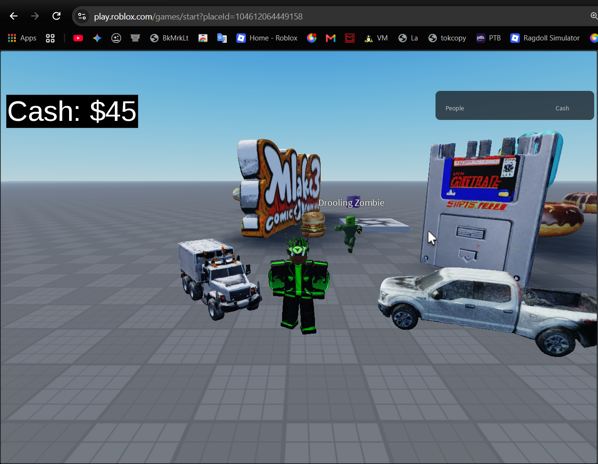

Less 403.
More playable.
A script that fixes 403 errors and assets that fail to load in the experimental, unreleased Roblox web client, so it can be playable.
Only works on places you own.

of it working
First, a quick check.
We’ll do this one step at a time. You’ll need Python, Google Chrome, and a free browser extension called Tampermonkey.
Double-clicking the setup script will create your overrides folder for you. No commands to paste.
The recovered files are loaded through Chrome’s Local Overrides. Chrome DevTools must stay attached while you play.
Which game is yours?
Enter your Roblox username. We’ll look for public games owned by that account. You can always type a Place ID instead.
Lookup sends the entered public username to third-party RoProxy. No password or sign-in is needed.
Your place needs to be public. Roblox must assign the pinned engine build, or these overrides won’t match.
Two files, one folder.
Download the personalized Python setup script and the payload ZIP. Keep them together in the same folder—for example, Downloads.
Download both files before continuing.
Open it with Python. It downloads the 101 MB wasm from the Internet Archive, checks all files, and creates overrides/ and roblox-webclient-rescue.user.js beside the two downloads. A completion window appears when it’s done.
Downloads blocked or saved with different names?
The browser may rename a second download to webclient-rescue-payload (1).zip; setup.py finds it automatically. If ZIP assembly is blocked, download part 1, part 2, and part 3 into the same folder. The script joins them itself. The plain setup.py asks for a Place ID when opened.
Set up your browser.
The Python script made the files. These two browser features still need a one-time setup.
Install and enable Tampermonkey
Install Tampermonkey from Chrome Web Store ↗
- After installing, open a new Chrome tab and type
chrome://extensions. Find Tampermonkey and click Details. - Turn on Allow User Scripts. On Chrome older than 138, turn on Developer Mode instead. To drag in a local file, also turn on Allow access to file URLs.
- Drag
roblox-webclient-rescue.user.js(created beside setup.py) into Chrome. Approve Install in Tampermonkey, then check its Dashboard toggle is on.
If dragging the userscript doesn’t install it
Click Copy userscript above, or open the .user.js file in Notepad and copy everything. In Tampermonkey, open Dashboard → Add a new script, replace the example code, paste, and save with Ctrl+S. The Dashboard switch must be on.
Turn on Chrome Local Overrides
- In the Chrome tab you’ll use for the game, press F12 to open DevTools.
- Go to Sources → Overrides. Click Select folder for overrides, choose the new
overridesfolder beside setup.py, and allow access. - Make sure Enable Local Overrides is checked. Keep DevTools attached to that tab. Open the Overrides pane before a normal reload.
Open your game.
Use this link in Chrome. It opens the public place you selected in a new tab, so press F12 in that tab before you play.
Choose a place in Step 2.Chrome Local Overrides stop working as soon as DevTools detaches. Leave the DevTools window open (it can be undocked), with Sources → Overrides enabled.
- Open the Overrides pane before you reload.
- Use normal Ctrl+R only. Never hard-refresh or turn on Disable cache.
- Tampermonkey and your place-specific userscript must both be enabled.
- If Roblox uses a different engine version for your place, this pinned package won’t match it.
Audio’s unavailable web-only processor is not restored. Avatar-compositing meshes are included but still need a live check.
Install Python first.
You only need to do this once. Use the official Python site—not a random download mirror.
- 1Download Python
Open the official page and choose the current Windows installer (64-bit).
Open python.org/downloads ↗ - 2Run the installer
If offered, tick Add Python to PATH, then choose Install Now. Accept the Windows prompts and wait for “Setup was successful.”
- 3Come back here
After downloading both files in Step 3, double-click
setup.py. If it opens in Notepad, right-click → Open with → Python or Python Launcher. No PowerShell needed.
The short version.
The payload is private, version-pinned, and hash-checked. The only external engine download is the Internet Archive wasm.
Enter a numeric Place ID first.
- Keep both downloads together; run
setup.pywith Python. Output:./overrides/and a personalized.user.js. - Tampermonkey: Chrome extension Allow User Scripts (and local file access if dragging the file); install/enable the generated .user.js.
- DevTools on the game tab: Sources → Overrides, choose
./overrides, enable; keep DevTools attached. No hard reload or Disable cache. - Open the selected place on
https://play.roblox.com/games/start?placeId=…. This package only matches buildf4a4dba57f874ad0.